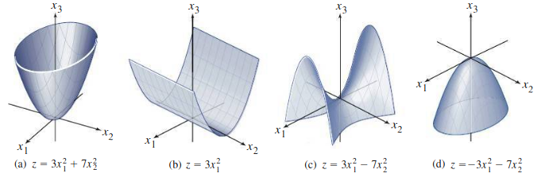

Symmetric Matrices
Table of Contents
1. Symmetric Matrices
A real square matrix \(S\) is called symmetric if:
\begin{align} S^T = S \end{align}Looking at their eigenvalues and eigenvectors, we can see why they are special:
- All \(n\) eigenvalues \(\lambda\) of a symmetric matrix are real numbers.
- Each eigenvalue has algebraic multiplicity = geometric multiplicity.
- The \(n\) eigenvectors can be chosen orthogonal to each other.
Why must they be orthogonal to each other? Consider two distinct eigenvalues \(\lambda_1\) and \(\lambda_2\), with their corresponding eigenvectors being \(\mathbf{v}_1\) and \(\mathbf{v}_2\). Then, consider:
\begin{align} \lambda_1 \mathbf{v}_1^T\mathbf{v}_2 &= \lambda_1(\mathbf{v}_1 \cdot\mathbf{v}_2) \notag \\ &= (\lambda_1\mathbf{v}_1)^T\mathbf{v}_2 \notag \\ &= (A\mathbf{v}_1)^T\mathbf{v}_2 \notag \\ &= \mathbf{v}_1^TA^T\mathbf{v}_2 \notag \\ &= \mathbf{v}_1^TA\mathbf{v}_2 \notag \\ &= \lambda_2\mathbf{v}_1^T\mathbf{v}_2 \notag \end{align}But since \(\lambda_1 \neq \lambda_2\), the only way for this equality to hold would be if \(\mathbf{v}_1^T\mathbf{v}_2 = 0 \Rightarrow \mathbf{v}_1 \cdot \mathbf{v}_2 = 0\).
The other case is if we have repeated eigenvalues. However, if we have repeated eigenvalues that do not yield orthogonal eigenvectors, we can simply apply Gram-Schmidt to get orthogonal eigenvectors for that eigenspace.
1.1. Diagonalization
A symmetric matrix \(S\) is orthogonally diagonalizable, which means that there exists matrices \(Q\) and \(\Lambda\) such that \(\Lambda\) is diagonal and \(Q\) is an orthogonal matrix:
\begin{align} \boxed{S = Q\Lambda Q^T} \end{align}We see that every matrix of this form is symmetric: taking the transpose of the diagonalization, we get \(Q^{TT}\Lambda^TQ^T = Q\Lambda Q^T\).
1.2. Spectral Decomposition
The three properties listed at the top lead to an interesting breakdown of the symmetric matrix, known as the spectral decomposition. If \(S\) is a symmetric matrix with eigenvalues \(\lambda_1, \lambda_2, \dots , \lambda_n\) and orthonormal eigenvectors \(\mathbf{u}_1, \mathbf{u}_2, \dots, \mathbf{u}_n\), then:
\begin{align} \boxed{S = \lambda_1\mathbf{u}_1\mathbf{u}_1^T + \lambda_2\mathbf{u}_2\mathbf{u}_2^T +\cdots + \lambda_n\mathbf{u}_n\mathbf{u}_n^T} \end{align}We can see why this is true if we multiply both sides on the right by \(\mathbf{u}_1\). Then, all the terms on the right hand side of the equation go to zero since they are orthogonal to \(\mathbf{u}_1\), except for \(\lambda_1\mathbf{u}_1\mathbf{u}_1^T\). Thus we have \(S\mathbf{u}_1 = \lambda_1\mathbf{u}_1\), which is true by the definition of eigenvectors.
2. Quadratic Forms
For an \(n \times n\) symmetric matrix \(S\), given a vector \(\mathbf{x} \in \mathbb{R}^n\), define the quadratic form as the function \(Q: \mathbb{R}^n \rightarrow \mathbb{R}\):
\begin{align} \boxed{Q(\mathbf{x}) = \mathbf{x}^TS\mathbf{x}} \end{align}where \(S\) is known as the matrix of the quadratic form.
We can write the quadratic form out generally for a \(2 \times 2\) symmetric matrix:
\begin{align} \begin{bmatrix} x_1 & x_2 \end{bmatrix} \begin{bmatrix} a & b \\ b & c \end{bmatrix} \begin{bmatrix} x_1 \\ x_2 \end{bmatrix} &= \begin{bmatrix} x_1 & x_2 \end{bmatrix} \begin{bmatrix} ax_1 + bx_2 \\ bx_1 + cx_2 \end{bmatrix} \notag \\ &= ax_1^2 + bx_1x_2 + bx_1x_2 + cx_2^2 \notag \\ &= ax_1^2 + 2bx_1x_2 + dx_2^2 \end{align}2.1. Change of Variable
We see that above, we have a mixed term \(2bx_1x_2\), which complicates things. Fortunately, we can eliminate this mixed term by making a suitable change of variable with some \(n \times n\) invertible matrix \(P\):
\begin{align} \mathbf{x} = P\mathbf{y} \end{align}Using this in the quadratic form, we get:
\begin{align} Q &= \mathbf{x}^TA\mathbf{x} \notag \\ &= (P\mathbf{y})^TA(P\mathbf{y}) \notag \\ &= \mathbf{y}^T(P^TAP)\mathbf{y} \notag \end{align}Using the \(2 \times 2\) matrix above as an example, we see that in order to eliminate the mixed term, we want the matrix product \(P^TAP\) to be a diagonal matrix. Since \(A\) is symmetric, we can orthogonally diagonalize it with some orthogonal matrix \(P\) and diagonal matrix \(D\):
\begin{align} A &= PDP^T \notag \\ \Rightarrow P^TAP &= D \notag \end{align}Thus, we can use the same \(P\) as in our diagonalization of \(A\) in the change of variables equation in order to get a quadratic form with no mixed terms.
2.2. Classifying Quadratic Forms
The quadratic form \(Q\) can be viewed as a real function. If \(A\) is a \(2 \times 2\) matrix, then we have several possibilities, where \(z = Q(\mathbf{x})\):

We can then classify \(Q\) based on the sign it takes on. A quadratic form \(Q\) is:
- positive definite if \(Q(\mathbf{x}) > 0 \; \forall \: \mathbf{x} \neq 0\),
- negative definite if \(Q(\mathbf{x}) < 0 \; \forall \: \mathbf{x} \neq 0\),
- positive semidefinite if \(Q(\mathbf{x}) \geq 0 \; \forall \: \mathbf{x}\),
- negative semidefinite if \(Q(\mathbf{x}) \leq 0 \; \forall \: \mathbf{x}\),
- indefinite if \(Q(\mathbf{x})\) assumes both negative and positive values.
In the example above, (a) and (b) are both positive semidefinite, but (a) is better described as positive definite.
Since with a change of variables \(\mathbf{x} = P\mathbf{y}\) we can write \(Q(\mathbf{x}) = \mathbf{y}^TD\mathbf{y}\), where \(D\) has the eigenvalues of \(A\) on the diagonal, we can relate these classifications to the eigenvalues of \(A\). The quadratic form \(Q\) is:
- Positive definite if and only if the eigenvalues of \(A\) are all positive,
- Negative definite if and only if the eigenvalues of \(A\) are all negative,
- Indefinite if and only if \(A\) has both positive and negative eigenvalues.